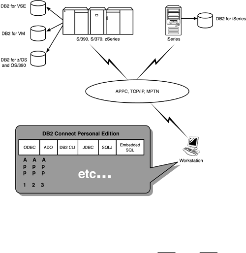
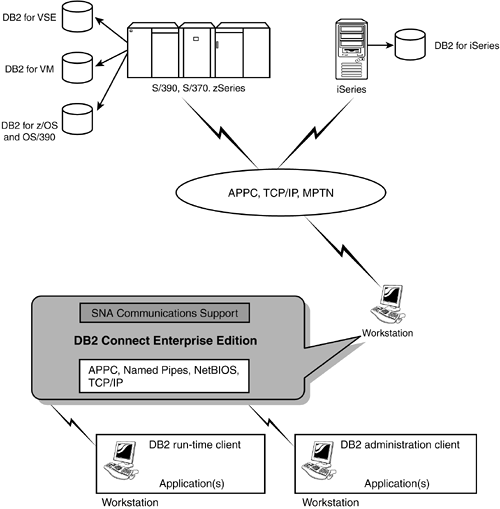

|
|
< Day Day Up > |
|
An Overview of IBM DB2 ConnectDB2 Connect provides fast, transparent read/write access to all DB2 family servers, not just z/OS and OS/390. You can use DB2 Connect in conjunction with IBM DB2 Relational Connect to obtain transparent, consolidated access to Oracle, Sybase, Microsoft SQL Server and Informix databases, too. DB2 Connect forwards SQL statements submitted by application programs to host database servers. DB2 Connect can forward almost any valid SQL statement. DB2 Connect fully supports the common IBM SQL, as well as the DB2 for z/OS and OS/390, DB2 for VSE and VM (formerly SQL/DS), and DB2 for iSeries implementations of SQL. CAUTION To maintain portability and database independence, restrict the SQL in your applications using DB2 Connect to common IBM SQL. If you use features supported only on a specific DB2 platform, your applications will not be easily portable to another platform. DB2 Connect implements the DRDA architecture as discussed in Chapter 42, "Distributed DB2." By exploiting the DRDA architecture, DB2 Connect offers a well-performing, cost-effective solution. DB2 Connect provides support for distributed requests across databases and DBMS platforms. For example, you can join tables across different DB2 for z/OS subsystems or even code a UNION between a DB2 table and an Oracle table. Currently, only members of the DB2 Family and Oracle are supported for distributed request. Distributed request provides location transparency for database objects. DB2 Connect supports multi-site update. Also known as distributed unit of work (DUW) and two-phase commit, multi-site update enables applications to update data in multiple remote database servers with guaranteed integrity. You can update any mix of supported database servers. For example, your application can update several tables in DB2 on Windows, a DB2 for z/OS table, and a DB2 for AS/400 database, all within a single transaction. DB2 Connect can be used to bring Web applications and host data together. DB2 Connect provides broad support for developing and deploying applications using the latest Web technologies, helping you in many cases to reduce development time and the cost of ownership for applications and enhancements. Whether you are developing Web applications using Java, .NET, or ASP, DB2 Connect can be used to supply enterprise data to your application server. Other beneficial features of DB2 Connect include:
Additionally, IBM provides the following utilities to help administer DB2 Connect:
Supported PlatformsDB2 Connect supports a variety of the most popular DBMS environments, server operating systems, and client operating systems, enabling you to create viable, efficient distributed applications. DB2 Connect supports DB2 as the host DBMS in the following environments: z/OS, OS390, AS/400, VSE and VM, as well as SQL/DS V3.5. DB2 Connect supports the following server platforms: Windows NT, Windows 2000, IBM OS/2, Sun Solaris, HP-UX, SCO Unix, IBM AIX, Linux, and Linux for IBM S/390. The client platforms supported by DB2 Connect include Windows NT (32-bit), Windows 95 (32-bit), Windows 98 (32-bit), Windows XP (32-bit) Home and Professional, Windows 2000, IBM OS/2 (32-bit), HP-UX, SCO UnixWare (V5.2), Sun Solaris, Silicon Graphics IRIX, IBM AIX, and Linux. Additionally, DB2 Connect is in compliance with most of the popular standards and interfaces including DCE security, ODBC, JDK 1.3, JDBC, SQLJ, ADO, ADO.NET, and OLE DB (among others). Packaging and Editions of DB2 ConnectIBM offers several connection solutions under the DB2 Connect brand. If you decide to use DB2 Connect to hook up your applications to DB2 for z/OS, you will need to choose how you will connect them. The actual package or edition of DB2 Connect to use depends on your environment and needs. There are four different editions of DB2 Connect:
These editions offer similar features, but with some important differences, including how connections are made, pricing, and usability for different purposes. DB2 Connect Personal Edition provides direct connectivity to host databases, whereas DB2 Connect Enterprise Edition provides indirect connectivity that allows clients to access host (zSeries and iSeries) DB2 databases through the DB2 Connect server. The other packages are variations of PE and EE. The following sections will outline the benefits and uses for each of the DB2 Connect editions. DB2 Connect Personal EditionUsing DB2 Connect PE, applications running on Windows (or Linux) personal workstations are able to access data from a host DB2 server on zSeries or iSeries. It can also be used to connect to a DB2 server on Linux, Unix, or Windows. DB2 Connect PE is typically used for two-tier applications where an intermediate server is not used. The connection is a direct connection from the workstation to the server. DB2 Connect PE is not designed to act as a connectivity server and cannot accept inbound requests for data. However, because DB2 Connect PE provides a direct connection to host-based DB2 data sources using TCP/IP or SNA, it is useful when processing large result sets. Figure 43.1 depicts the basic setup using DB2 Connect PE. DB2 Connect PE is installed on the workstation to enable a direct connection to DB2 on a zSeries or iSeries host. To establish a network connection the workstation has to be set up for APPC, TCP/IP or MPTN. Figure 43.1. DB2 Connect Personal Edition.NOTE TCP/IP connectivity requires connecting to a host running DB2 for OS/390 V5 or later, DB2 for AS/400 V4.2 or later, or DB2 for VM V6.1 or later. You do not need to have DB2 UDB installed on workstation with DB2 Connect. Indeed, no DBMS at all is required on the workstation; DB2 Connect serves data to the workstation from a DB2 host server. DB2 Connect Enterprise Edition (EE)DB2 Connect EE can be used as a mid-tier gateway server for many users requiring host database access. In this environment, as shown in Figure 43.2, clients connect to the host server over a DB2 Connect EE gateway. DB2 Connect EE is running on a server and the clients access host DB2 servers over the DB2 Connect EE server. SNA Communications Support is required only where native TCP/IP connectivity is not available. Figure 43.2. DB2 Connect Enterprise Edition.NOTE TCP/IP connectivity requires connecting to a host running DB2 for OS/390 V5 or later, DB2 for AS/400 V4.2 or later, or DB2 for VM V6.1 or later. In this example, you could replace the DB2 Connect server with a DB2 UDB Enterprise Server Edition that has the DB2 Connect Server Support component installed. Connections to the DB2 Connect EE gateway are configured the same way that connections to distributed DB2 servers are configured. DB2 Connect EE is a good choice for fat client applications and those applications requiring additional resource management and administration capabilities not provided by DB2 Connect PE. NOTE Note that the DB2 UDB Enterprise Server Edition (DB2 ESE) product includes a DB2 Connect component to provide for occasional mainframe connectivity for data replication and server administration. The DB2 Connect component of DB2 ESE server provides a license for up to five users to access zSeries and iSeries servers at no additional cost. If additional users need access to zSeries and iSeries servers, you will need to purchase the appropriate DB2 Connect product. DB2 Connect EE is licensed based on the number of users accessing the server. Users can be either registered or concurrent. A registered user is identified by name as using one or more DB2 Connect EE servers. A concurrent user is a measure of the number of people that are using the same DB2 Connect EE server at the same time. For concurrent usage, the number of individuals (not processes or connections) using the server at any point-in-time cannot exceed the maximum for which you are licensed. Choosing a licensing method can be a confusing and difficult task. To clarify, suppose Craig and Beth both need to access a table on a DB2 for z/OS subsystem. If you purchase a single concurrent user license then both Craig and Beth can use the license, but they cannot use it at the same time. On the other hand, if you purchase a registered user license for Craig, then Beth cannot use it at all. Of course, this gets more complicated as the number of users increases and workload varies. Licensing becomes even more difficult, if not impossible to determine for Web-based applications. As such, IBM makes only the registered user model available for Web-based applications using DB2 Connect EE. This can become very expensive very quickly. Fortunately, IBM provides other options in the DB2 Connect Application Server Edition and DB2 Connect Unlimited Editions. DB2 Connect Application Server EditionThe technology used in the DB2 Connect ASE product is the same as that used in DB2 Connect EE. DB2 Connect ASE is designed for large-scale, demanding environments, but offers more attractive licensing terms and conditions. DB2 Connect ASE license charges are based on the size of the number of processors available to the application servers where the application is running. Number of users, size of the DB2 Connect server, or size of the DB2 database server on the mainframe does not affect license charges. DB2 Connect Unlimited EditionThe final packaging option for DB2 Connect is the DB2 Connect Unlimited Edition product. This package is well suited for organizations that require extensive DB2 Connect usage. DB2 Connect UE basically offers unlimited deployment of DB2 Connect PE and DB2 Connect ASE throughout an organization. The licensing for DB2 Connect UE is based on the size of the mainframe database server; it is not affected by either the number of users nor the number of processors available to the application servers. DB2 Connect UE is ideal for organizations with a large mixture of application types and needs. DB2 Connect EE Thread PoolingThe most resource-intensive prospect of using DB2 Connect to access mainframe data from a workstation is establishing connections. In an active distributed environment hundreds, or perhaps thousands of client applications are connecting to and disconnecting from the host through the DB2 Connect server. Doing so consumes overhead as processing time is spent establishing and dropping connections. To reduce this overhead, DB2 Connect EE uses thread pooling techniques that minimize the resources required on the DB2 for z/OS database servers. Efficiency is gained by concentrating the workload from all applications into a much smaller set of connections. This is known as thread pooling, and there are two techniques at the disposal of DB2 Connect: connection pooling and connection concentrator. The default technique used by DB2 Connect EE is connection pooling. It allows reuse of an established connection infrastructure for subsequent connections. When a DB2 Connect instance is started, a pool of coordinating agents is created. When a connection request comes in, an agent is assigned to this request. The agent will connect to the DB2 server and a thread will be created. When the application issues a disconnect request, the agent will not pass this request along to the DB2 server. Instead, the agent is put back in to the pool. The agent in the pool still owns its connection to the DB2 server and the corresponding DB2 thread. When another application issues a connect request, this agent is assigned to this new application. Connection concentrator extends the features of connection pooling by improving load balancing in parallel Sysplex configurations. With connection concentrator, DB2 uses a more sophisticated approach to reducing resource consumption for very high volume OLTP applications. This function can dramatically increase the scalability of your DB2 for z/OS and DB2 Connect solution, while also providing for transaction-level load balancing in DB2 for z/OS data sharing environments. With connection pooling one application has to disconnect before another one can reuse a pooled connection. Rather than having the connection become free for use by another client at client disconnect, connection concentrator allows re-use of a server task when an application performs a COMMIT or ROLLBACK. The following conditions must be met when a client application reaches a COMMIT point to enable connection concentrator to reuse an agent:
Be sure that there are enough agents available in the connection pool to contain all active clients. Doing so enables connection concentrator to avoid unnecessary connection reuse outside of the load balancing process. Whereas connection pooling helps reduce the overhead of database connections and handle connection volume, connection concentrator helps increase scalability. With connection pooling, a connection is only available for reuse after the application owning the connection issues a disconnect. This is not helpful for two-tier client/server applications where users do not disconnect all day long. Additionally, if the application server in a multi-tier application establishes database connections at server start up time and does not release them until the application server is shut down, connection pooling is not helpful. Connection pooling improves overall performance, though, for Web and client/server implementations having a greater number of connections and disconnections. Connection concentrator allocates host database resources only for the duration of each SQL transaction while keeping user applications active. This allows for configurations where the number of DB2 threads and the resources they consume can be much smaller than if every application connection had its own thread. To summarize: keep in mind that the main difference between connection pooling and connection concentration is when the connection breaks. Connection pooling breaks the connection at disconnect, whereas connection concentration breaks the connection at the COMMIT point (after maximum logical agents is met). DB2 Connect GuidelinesConsider applying the advice in the following guidelines to optimize your usage of DB2 Connect. Choose DB2 Connect PE for Single Workstation SolutionsDB2 Connect PE can be a good choice for two-tier client/server applications running on desktop workstations that need to access data from mainframe DB2 databases. However, the personal edition is not suitable for deployment on multi-user systems and application servers. If you have two people who share a workstation, DB2 Connect PE is a viable solution, because each person uses the workstation individually. That is, they cannot both use the workstation at the same time. Only one connection is required at any time for both of these users so only one license of DB2 Connect PE is required. On the other hand, if you set up five workstations as dumb terminals making connections to a DB2 for z/OS server, you would need ten licenses of DB2 Connect PE. Of course, you could use DB2 Connect EE instead, too. Favor DB2 Connect EE for Multi-User SolutionsDB2 Connect EE is the required solution when a middle tier connectivity server is required. DB2 Connect EE is suitable for environments where the number of concurrent users can be easily determined. However, DB2 Connect UE and ASE are preferable to EE for Web-based applications and multi-tier client/server applications where the number of concurrent users is difficult, or impossible, to determine. This is so mostly due to the cost of licensing. Setting Up the DDF for z/OSYou must set up the DDF as an application server to connect distributed applications to DB2 for z/OS and OS/390. There are two ways of doing this:
Be sure to perform a DDF update to the Boot Strap Data (BSDS) after making one of these changed. Because DDF will try to connect to VTAM you must ensure that VTAM is active when the DDF starts. Configure Distributed ThreadsUse the DSNZPARM CMTSTAT to control the behavior of distributed threads. CMTSTAT specifies whether a DDF thread is made active or inactive after it successfully commits or rolls back and holds no cursors. Consider setting CMTSTAT to INACTIVE because inactive connections consume less storage. A thread can become inactive only if it holds no cursors, has no temporary tables defined, and executes no statements from the dynamic statement cache. If you specify ACTIVE, the thread remains active. Although this can improve performance it consumes system resources. If your installation supports a large number of connections, specify INACTIVE.
Although inactive connections are preferable to inactive DBATs, not every thread can become an inactive connection. If a thread is to become inactive, DB2 tries to make it an inactive connection. If DB2 cannot make it an inactive connection, it tries to make it an inactive DBAT. If neither attempt is successful, the thread remains active. Increasing Data Transfer RatesIn addition to blocking of rows for a query result set, DB2 can also return multiple query blocks in response to an OPEN or FETCH request to a remote client (such as DB2 Connect). Instead of repeatedly sending requests to DB2 for z/OS requesting one block of data at a time, DB2 Connect can optionally request that the server send back some number of extra query blocks. These extra query blocks allow the client to minimize network traffic, thereby improving performance. DB2 Connect can be set up to request extra query blocks from a mainframe DB2 server by default. Use the EXTRA BLOCKS SRV parameter on the DB2 DDF installation panel to enable support for extra query blocks. The minimum value for this parameter is 0 and the maximum is 100. Favor keeping the parameter set to the default value, which is 100. On the client side, you activate support on a cursor or statement basis. It is controlled by a query rowset size for a cursor, or the value of n in the OPTIMIZE FOR n ROWS clause or FETCH FIRST n ROWS ONLY clause. Specify Character Data Types CautiouslyWhen character data is accessed using DB2 Connect, the choice of CHAR versus VARCHAR will impact performance. VARCHAR is more efficient if the length varies significantly. If the size of data does not vary much, CHAR is more efficient because each VARCHAR column requires two bytes of length information to be transmitted along with the data. Of course, DB2 Connect transmission performance is but one consideration when choosing a data type. Refer to Chapter 5 for additional considerations. BIND the DB2 Connect UtilitiesDB2 Connect comes with several utilities that use embedded SQL, and therefore their programs must be bound to a database server before they can be used with that system. The list of bind files required by these utilities is contained in the following ddcsmvs.lst file for DB2 for z/OS and OS/390. NOTE If you do not use the DB2 Connect utilities, you do not have to BIND their programs to each of your DB2 for z/OS database servers. If DB2 Connect Enterprise Edition is installed, the DB2 Connect utilities must be bound to each database server once from each type of client platform, before they can be used with that system. For example, if you have 5 Windows clients and 4 Linux clients connecting to DB2 for z/OS using DB2 Connect EE, then BIND the programs in ddcsmvs.lst from one of the Windows clients, as well as from one of the Linux clients, and then from the DB2 Connect server. CAUTION If all the clients are not at the same service level, you might need to BIND from each client for each particular service level. BIND Your Application Programs ProperlyEvery application program that uses embedded SQL must be bound to each database from which it must access data. Beware of SQLCODE and SQLSTATE DifferencesDifferent IBM relational DBMSs will not always produce the same SQLCODE values for the same, or similar errors. This can be troublesome in distributed applications. There are two ways of handling this situation:
DB2 Connect can map SQLCODEs and tokens from each IBM mainframe or iSeries server to your appropriate DB2 UDB system. You can specify your own SQLCODE mapping file if you want to override the default mapping or you are using a non-IBM database server that does not have SQLCODE mapping. SQLCODE mapping is enabled by default. If you want to turn off SQLCODE mapping, specify NOMAP in the parameter string of the DCS directory or the DCE routing information object. |
|
|
< Day Day Up > |
|